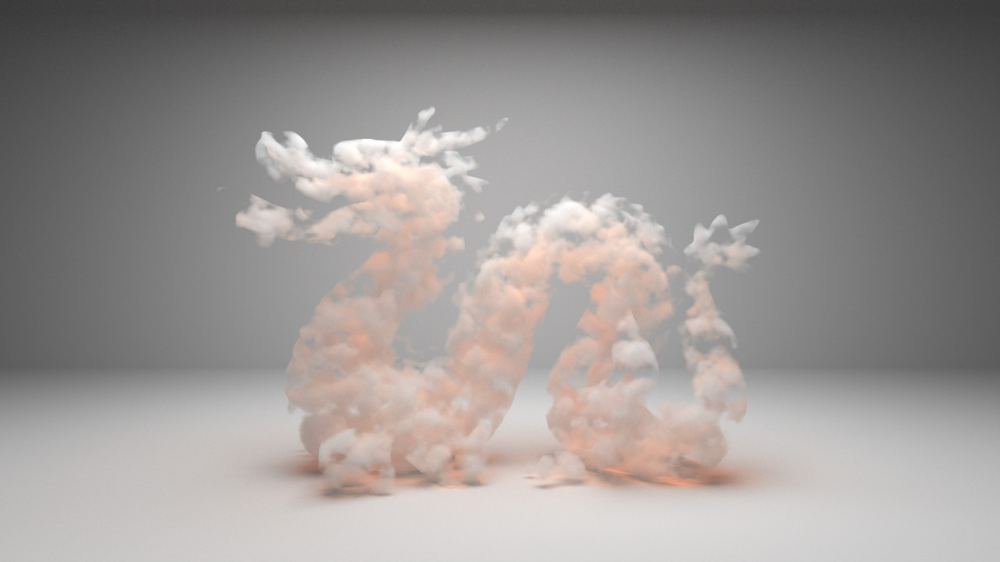
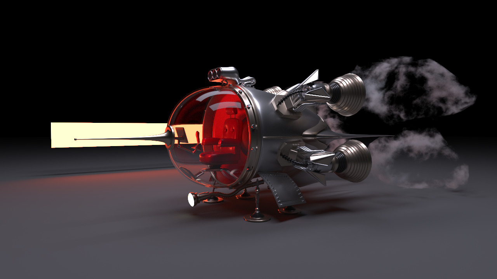
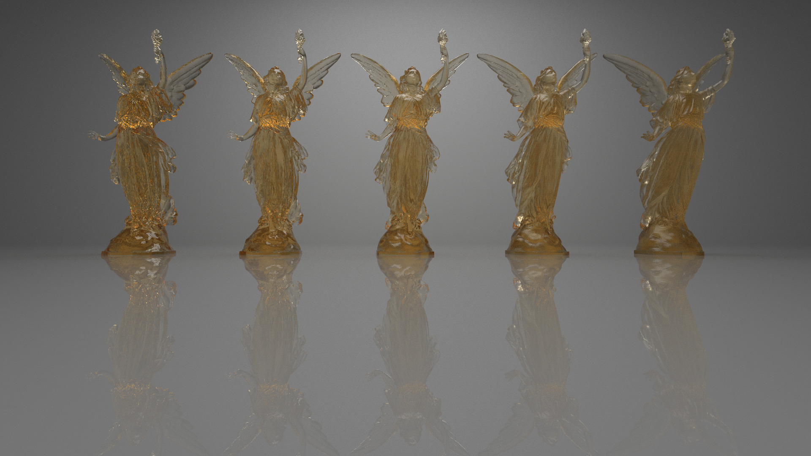
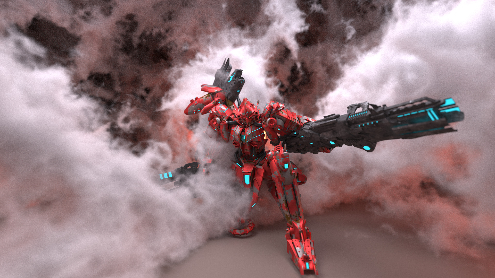
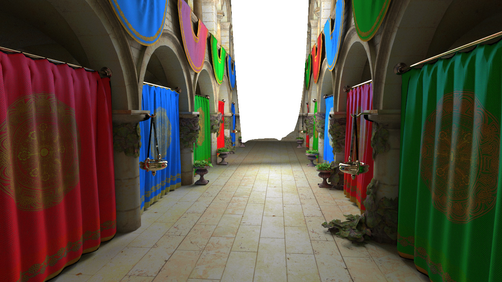
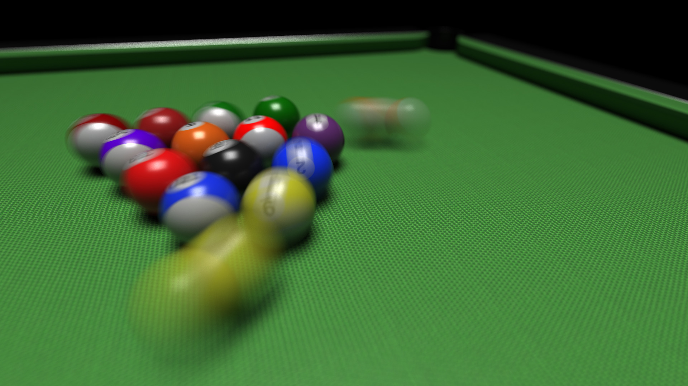

This page provides some details on my personal academic rendering engine, started and improved over the course of my PhD, and continued for my current research and learning projects. The core source code is composed of 35000 lines of C++, it has been used to render thousands of hours of images and all figures from my academic publications, and used on various machines including the compute cluster IN2P3.
Unfortunately the codebase is not public yet due to two reasons: some unpublished work implemented in it and a lazyness in the code quality that makes some part of it obfuscated. Below are the list of features it includes and some renders produced by the renderer.
However, a small portion of it has been separated and published alongside my publication Volumetric multi-view rendering.
It includes the following list of features:
| The dragon model courtesy of Stanford Computer Graphics Laboratory |  The spaceship model courtesy of thecali |
|  Lucy model courtesy of Stanford Computer Graphics Laboratory | The shogun model courtesy of Zeroswat |
| The Disney Cloud Data Set courtesy of Walt Disney Animation Studios | The sponza atrium model courtesy of Marko Dabrovic |
| Zero day model courtesy of Beeple | The pool table model courtesy of Chamouleau |
[Bekaert:2002] Accelerating Path Tracing by Re-using Paths, Bekaert et al., 2002
[Fraboni:2019] Adaptive Multi-view Path Tracing, Basile Fraboni et al., 2019
[Fraboni:2021] Volumetric Multi-view Rendering, Basile Fraboni et al., 2021
[Heitz:2018] Combining analytic direct illumination and stochastic shadows, Heitz et al., 2018
[Jendersie:2019] Microfacet Model Regularization for Robust Light Transport, Jendersie et al. 2019
[Kajiya:1986] The Rendering Equation , James T. Kajiya, 1986
[Kettunen:2021] An unbiased ray-marching transmittance estimator, Kettunen et al., 2021, link
[Kolb1995] A Realistic Camera Model for Computer Graphics, Kolb et al., 1995
[Miller2019] A null-scattering path integral formulation of light transport, Miller et al., 2019
[Musgrave1994] Texturing and modeling: a procedural approach, Musgrave et al., 1994
[Peck2020] FastNoise Lite: a portable open source noise generation library, Jordan Peck, 2020, github
[Rigau2003] Refinement Criteria Based on F-divergences, Rigau et al., 2003
[Shirley1994] Direct lighting calculation by monte carlo integration , Shirley et al., 1994
[Talbot2005] Importance Resampling for Global Illumination, Talbot et al., 2005
[Veach1995] Optimally Combining Sampling Techniques for Monte Carlo Rendering , Veachet al., 1995
[Wald2014] Embree: a kernel framework for efficient CPU ray tracing, Wald et al., 2014